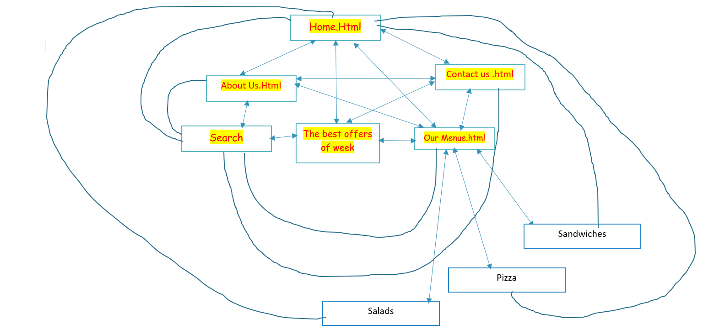

Nareh Salmasian, Ine Camilla,Sondre Stormyr,Johannes Andre Larssen
IT2805 Oct, 2016
2. Administrative Details
Client Name: Super Hero Burger
Website Name:SPR is Best
3. Purpose, goals and audience
The plan is just tentative. There may be some major and minor changes during the process of design. We're keeping our options free so that we may add or change our work on the spot. Over the time we may find other solutions which could work better, or we may discover some functionalities that our webpage could possibly lack, as we progress our work. The following is what we decided our solution should contain:
The site will contain contact information and directions, opening hours, menus, free working positions, news section, picture section with social medias.
The site will be sectioned into a front page which will contain a logo with a slogan (main menu) and this will be kept the same throughout the whole navigation process
The menus will consist of a food menu, "about us" section (the company), picture gallery, contact information, comment section, "free working positions" section and "social medias"section.
4. Navigation Structure
The navigation structure of SuperHero website can be described as
clique, and it is shown in Figure 1. From the homepage, it is possible to access
all of the pages included in the website, and vice versa, it is
possible to access the homepage from every page through the use of a
roll-over menu. Though not visible until hovered upon, the links for
each web page are included within every page.
In the Search part they can search any news and information they want, In the Contac us we provide evry detail e.g address mail and
even delivery options. In the About us we provide every detail about the Super Hero. In the Best offers part we show the week best offer which clients can buy that meal cheaper than other things.In our Menue they can search for every thing that our menue includes in it

5. Page Layout and Appearance
WeThe page layout and design has been done the way that it becomes much user friendly and to be attractive for everyone who opens the website. It includes a navigation Bar where evry part takes the user to other pages. Like about us, Search, Contact us and also the Menue.The website has the Logo of our Customer in top as it is in most of the Universal Websites.
Figure 2: Mockup for Generic Features
The specific styling for the website that will apply to all pages can be found below:
Font: “Arial” for the main title (35pt) and navigation bar (20pt), and
“Alegreya Sans” for the body (13pt)
Color Scheme
Text: Black
Background: Super Hero image
Links: orange rgb(243, 138, 121)
Shadows: pictures of art will be displayed with a gray shadow at on-load,
and darker, black shadows when hovered.
Borders of the tabs: transparency 50% for each of the following colors
in order from left to right: rgb(254,171,114), rgb(245, 207,101),
rgb(249, 217, 70), rgb(188, 214,237), rgb(176, 171, 216).
Body width: 960px;
Links: The main title “Super Hero will be a clickable link which
will bring users back to the home page. The menu sections will have drop-down
menus that can be clicked and contain links to the respective pages.
Navbar position and its appearance: The navbar will be included
at the top of the page. When the mouse hovers over the tabs within the
menu bar, the figurines will appear above the particular tab.
Banner: The banner will be "Nan Nan Art Studio" written in Flamenco, as seen
at the top of the mock-up picture.
Footer 1: nanmyanmar@gmail.com | Address
Background Images: We will use a parchment paper texture provided in Microsoft
Office Word, which we will make into a jpeg file.
Border Images: We will use a tree bark texture also provided on Microsoft Office Word.
Logo: Our logo will be located on the upper left corner of the page next to the
banner and the menu tabs. The word “Atutu” will be surrounded by figurines holding hands,
a logo Nan Nan and Jennifer Henbest have requested.
6. Content
There will be nine separate pages as follows:
Homepage-homepage.html
When you visit our website, the first page you will see is the homepage. Our goal with the homepage is to make it look professional and easily naviagated. The homepage will be a background with their logo on it and an introduction to their website and restaurant. We want users that hasn't yet visited the restaurant to become even more interested after seeing our site, and the first impression with the homepage is very important to that. Most of the traffick we assume will be from previous customers that want to check the opening and closing, and people that want to see the menu. So we have to make the site seem easily navigated as people might give up if they dont find what theyre looking for on the first try.
Figure 3: Mockup for homepage.html
About-about.html
The "About" page of the site will give brief information of the restaurant, their food and their history. It's designed to give the users information about Superhero Burger, such as when they started their business, what the restaurant looks like, their slogans etc. The page will help already going customers knowing more about their favorite restaurant.
Figure 4: Mockup for about.html
Day's Offer-daysoffer.html
The Day's Menu is the page which will showcase which meal is their speciality of the day. It will show which meal is recommended from the owners. We will make a page that is very tasteful and will showcase the food in a manner which will hopefully make the user more hungry and want to visit the restaurant. By having a page like this there will always be someone, if the traffick is great enough, that will get tempted by a picture of a delicious burger. This page will in other words be for advertising purposes and to attract more people by making them hungry
Figure 7: Mockup for atutu_aboutTheSchool.html
Our Menuourmenu.html
We will divide the menu page(s) into three categories; Burgers, Drinks and Extras. There will be every information you need about each part of the menu, divided into three to make it easier to read and navigate to what youre looking for. In the Burgers part it will say the name of each burger, its price, its components and its allergens. Drinks and Extras will simply give you the name of every drink they have and its price. The extras will give information about what else the shop has to offer, from extra burgers or cheese to chips and dip, aswell as a childrens menu.
Figure 6a: Mockup for artwork_paintings.html
Contactcontact.html
The "Contact" page will vive the users information about the restaurants contactinformation, such as their phonenumber, their emailaddress and facebookpage. It's very important for all restaurants to be easy accessible to the public, so giving the information to whomever needs it is the main goal of this page. We will put the email and phonenumber very visible and be the first things you see when you visit the "Contact" page. There will also be links to their social media sites, which are as of now Facebook and Instagram.
Figure 5: Mockup for inspirations.html
7. Minimum Requirements
We plan to fulfil the minimum requirements of Javascript
applications in this way:
Guttorm and Ellen will be in charge of implementing:
A Javascript function that will dynamically display artwork in
a random fashion in a slideshow. Since Nan Nan's website is very visual, we would
like it to be as interactive and appealing as possible. The random
image display through Javascript will increase user's curiosity and interesty by
portraying a variety of different aspects of Nan Nan's artwork, Atutu Art School,
and the children.
A Javascript function that allows a pop-up window to display a larger
version of the thumbnail picture when clicked on. We will have many pictures
of paintings and the school, so in order to decrease loading time and
not confuse the user, we will use 150px x 150px thumbnails, which the users will
be able to click on to enlarge. The resulting larger picture will be 350px x 450px.
We plan to make it similar to Facebook's function for pictures and the blurred gray background.
Trond and Birgit will be in charge of implementing:
A Javascript function for a roll over menu that will be provided on each
page to allow easy access to every other page in the website. We do not want
every link to appear constantly on the page, hence links of similar topics will
appear under one heading that will hint the user to hover over. For example,
the user can hover upon the "Atutu Art School" tab and the menu will roll down
displaying atutu_aboutTheSchool.html, atutu_ChildrenArtwork.html and
atutu_volunteerAndDonate.html.
A Javascript that uses loops for arrays to display prices and artwork
respectively. Nan Nan will be selling her artwork to potential customers
using the web page, so it is important for her to have easy control over
the price lists and art piece names and other relevant information such as
dimensions and material in one place.
As one of the pages include volunteer information, we hope to add a fifth
Javascript to display a volunteer form to acquire all the necessary information
for Nan Nan easily and efficiently.
8. Plan
We will be following the following organizational scheme
to create and store our files and the work division table to
keep track on who creates what and when.
Organizational Scheme
All of the following files will be gathered inside a folder nannan which
will be created in the coding phase of the project.
List of Files and Folders
homepage.html
about.html
inspirations.html
artwork_paintings.html
artwork_design.html
atutu_aboutTheSchool.html
atutu_childrenArtwork.html
atutu_volunteerAndDonate.html
supportAndContactUs.html
images/
background_image.png
background_border.png
headerLogo.png
painting_1.png
painting_2.png
painting_3.png
painting_4.png
…
painting_30.png
design_1.png
...
design_30.png
modularity/
menu.part
scripts/
randomImages.js
artworkPrices.js
rollOverMenu.js
imageSize.js
styling.css
Work Division and Deadlines
Filename
Description
In charge
Deadline
homepage.html
The homepage
Trond
04.11.2015
about.html
Brief biography about Nan Nan and the work that she does
Guttorm
04.11.2015
inspirations.html
Information on Myanmar’s art and culture
Birgit
04.11.2015
artwork_paintings.html
Nan Nan's paintings
Trond
04.11.2015
artwork_design.html
Nan Nan's design and crafts
Ellen
04.14.2015
atutu_childrenArtwork.html
Information on the children and display of their artwork
Birgit
04.14.2015
atutu_aboutTheSchool.html
Information on the school and classes
Meltem
04.14.2015
atutu_volunteerAndDonate.html
Volunteer and donation information
Trond
04.14.2015
supportAndContactUs.html
Information on contacting and supporting Nan Nan and Atutu
Birgit
04.14.2015
headerLogo.png
Logo for the header: children's drawing edited on Photoshop
Ellen
04.15.2015
menu.part
Birgit
04.16.2015
randomImages.js
A Javascript to randomly display images of artwork
and the school
Guttorm
04.18.2015
artWorkPrices.js
A Javascript using loops and arrays to correlate Nan Nan's
artwork with the respective prices
Trond
04.20.2015
rollOverMenu.js
A Javascript for a roll over menu when hovered upon
Guttorm
04.18.2015
imageSize.js
A JavaScript to add an interactive size attribute
Ellen
04.20.2015
styling.css
The CSS file containing all styling for the website
All
04.30.15
Final controls
Double checking each file for errors, checking the javascript and css